计算物理 · 课程汇报
以 Lorenz 系统为例
σ = 10ρ = 28β = 8/3
x₀x₀ + 10⁻⁵
t = 0.0|Δ| = 1.0e−5
目录
开场 · 现场演示
参考解 rtol = 1e−13 所选 rtol
唯一的旋钮是相对容差 rtol。前一段贴合，之后各自脱钩，差到吸引子的尺度。
绪论
绪论 · 物理图景
底下的流体受热变轻想上浮，上面的冷流体想下沉。粘性和热扩散会抵抗这种翻动。
两股力量之比叫 Rayleigh 数：
Saltzman（1962）、Lorenz（1963）只看一个方向上的二维卷。
绪论 · 出发点
Boussinesq 近似：密度只在浮力项里随温度变，其余地方当常数。
剩下两个未知场：流函数 ψ(X, Z, t) 管流动，θ(X, Z, t) 是温度偏离传导直线的那部分。流体静止时 θ ≡ 0。
\(J(a,b) = \partial_X a\,\partial_Z b - \partial_Z a\,\partial_X b\)，就是 \(\mathbf u\cdot\nabla b\)。这是 Lorenz 1963 的式 (17)–(18)。未知量是两个函数，所以是无穷维的。
绪论 · 怎么放进计算机
| 偏微分方程 | 第 1 步：空间离散 | 常微分方程组 | 第 2 步：时间推进 | |
|---|---|---|---|---|
| 一般形式 | 未知量是场，无穷维 | 选基函数或网格，只留 N 个数 | \(\dot{\mathbf u} = \mathbf f(\mathbf u),\ \mathbf u\in\mathbb R^N\) | \(\mathbf u_{n+1} = \Phi_h(\mathbf u_n)\) |
| 声场 FDTD | 波动方程 \(p_{tt} = c^2\nabla^2 p\) | 差分网格，N 动辄上百万 | 线性 | 蛙跳格式 |
| Lorenz | 二维 Boussinesq 对流 | 3 个 Fourier 模态，N = 3 | 非线性，3 行 | RK4（原理）· DOP853（实算） |
Lorenz 是线方法（method of lines）最小的例子：N = 3，小到每一步都能看清。
后面四段都落在第 2 步上：每一步的误差会怎样累积。
绪论 · 第 1 步 空间离散
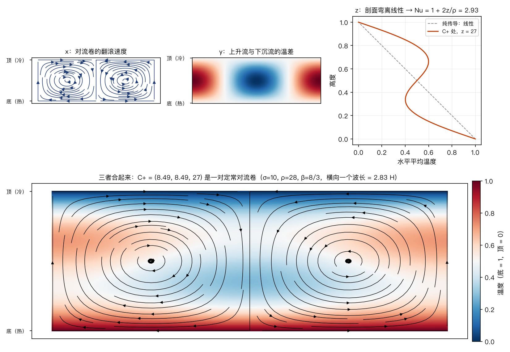
把 ψ、θ 按满足边界条件的正弦展开（谱方法），Lorenz 只留三项：
绪论 · 第 1 步 空间离散
Galerkin 做法：把三项展开代入两条 PDE，乘以每个模态、在一个卷上积分，每个模态得到一条 ODE。线性项各回各的模态，要算的只有平流 J。取 H = 1，k = πa：
| 平流里相乘的两样 | 乘出来的空间花样 | 去向 |
|---|---|---|
| 卷 × 卷 \(J(\psi,\nabla^2\psi)\) | 0：单个模态的 \(\nabla^2\psi \propto \psi\) | \(\dot x\) 方程是线性的 |
| 卷 x × 温差 y | \(\tfrac{k\pi}{2}\sin 2\pi Z\)，恰好是 z 的花样 | \(\dot z\) 里的 \(+xy\) |
| 卷 x × 剖面 z | \(k\pi\cos kX\,(\sin 3\pi Z - \sin\pi Z)\) | \(\sin\pi Z\) 回到 y：\(\dot y\) 里的 \(-xz\) \(\sin 3\pi Z\) 不在三个模态里，扔掉 |
截断就是扔掉 sin 3πZ 这一类高阶项。z 必须留：它是 x·y 直接生出来的。不留 z，方程只剩线性部分，ρ > 1 时振幅指数增长、停不下来。
绪论 · 得到的 ODE
| 方程 | 项 | 物理过程 |
|---|---|---|
| \(\dot x = \sigma(y - x)\) | \(+\sigma y\) | 浮力：热的一侧轻、冷的一侧重，温差推着卷转 |
| \(-\sigma x\) | 粘性给翻滚刹车 | |
| \(\dot y = \rho x - y - xz\) | \(+\rho x\) | 卷把底部热流体搬上去、顶部冷流体搬下来，制造水平温差 |
| \(-y\) | 热扩散把水平温差抹平 | |
| \(-xz\) | 剖面中段已被拉平，同样的翻滚搬来的温差打了折扣 | |
| \(\dot z = xy - \beta z\) | \(+xy\) | 热的上升、冷的下沉，净效果是向上运热，把剖面拉弯 |
| \(-\beta z\) | 热扩散把剖面拉回直线 |
非线性只有标色的两项，都来自流体搬运温度（平流 u·∇θ）。时间以热扩散为单位，Lorenz 的 1 个时间单位约等于 H²/κ 的 1/15。
绪论 · 参数
三个数都出自 Lorenz 1963 原文，此后的文献几乎都沿用，后面所有实验也都用这一组。ρ_H 在 ① 里会再出现。
绪论 · 模型的边界
后面所有结论都关于这个数学对象，不涉及流体或天气的主张。
但有几个物理系统，化简后恰好就是这组方程：
绪论 · 第 2 步 时间推进
def f(u): # 就是那三行方程 x, y, z = u return np.array([σ*(y-x), x*(ρ-z) - y, x*y - β*z]) u = u0 # 显式 Euler：一阶 for n in range(N): u = u + h * f(u) def rk4_step(u, h): # 经典 RK4：四阶 k1 = f(u) k2 = f(u + h/2 * k1) k3 = f(u + h/2 * k2) k4 = f(u + h * k3) return u + h/6 * (k1 + 2*k2 + 2*k3 + k4)
仓库里的 integrate.rk4_step 就是这几行（多一个时间参数）。后面的计算和现场演示都用 DOP853，只调 rtol。
| 积分器 | 步长怎么定 |
|---|---|
| RK4（原理） | 固定 h；h 减半，误差约缩小 16 倍 |
| DOP853（实算） | 8 阶；每步估计局部误差，按 rtol 自动调 h |
| DOP853，rtol = 1e-13 | 当作参考解 |
第 ① 部分
① 没有不变量可查 · 现场演示
① 没有不变量可查
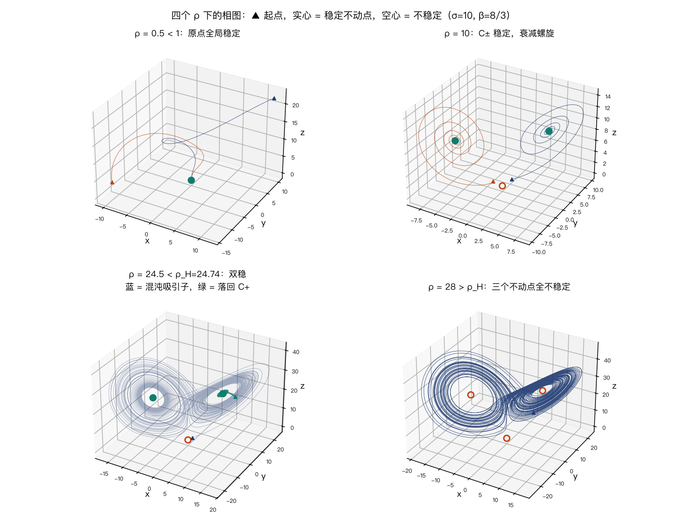
ρ 是加热旋钮：底板温差是刚好起对流时的 ρ 倍。
这四格不丢瞬态：要看的就是轨道怎样落到吸引集上。
① 没有不变量可查
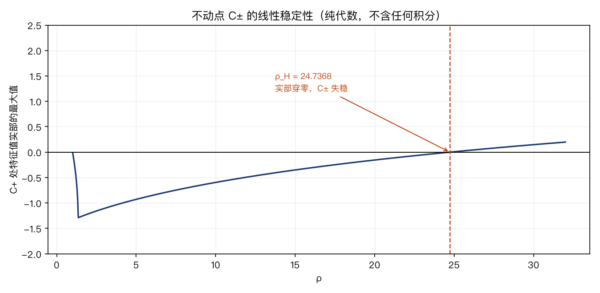
= (±8.4853, ±8.4853, 27)
亚临界 Hopf 阈值有闭式：
① 没有不变量可查
方括号在椭球 \(\rho x^2 + y^2 + \beta(z-\rho)^2 = \beta\rho^2\) 之外为正，V 在那里单调下降。
所有轨道最终被困在一个有界区域里。
① 没有不变量可查
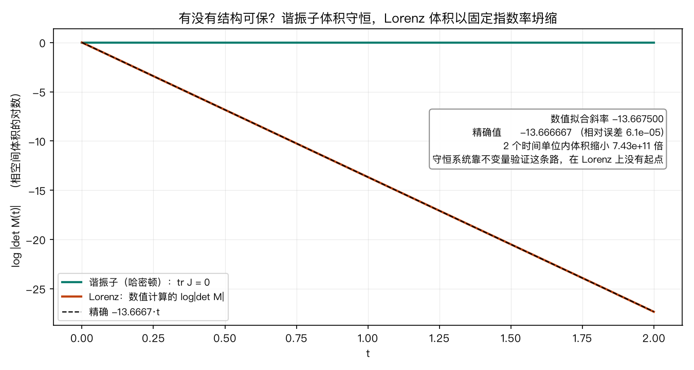
Jacobian 的迹在任何一点都相同：
第 ② 部分
② 精度只换来对数时间 · 现场演示
x₀ x₀ + ε t = 0.0|Δ| = 1e−6
换一个 ε 再跑一次，比较两次分开的时刻。
② 精度只换来对数时间
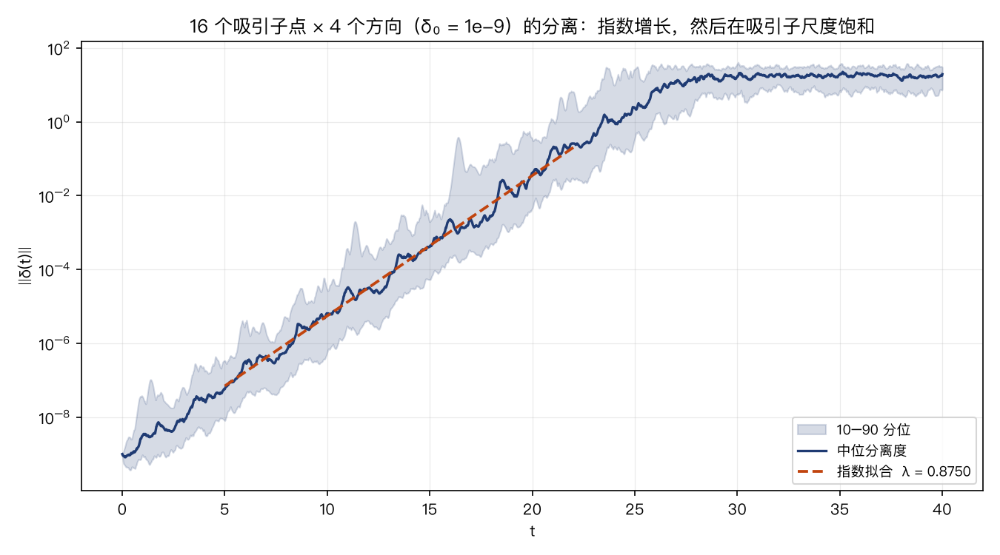
16 个吸引子点 × 4 个随机方向，扰动 δ = 1e−9，全部用参考精度积分。
② 精度只换来对数时间 · 核心证据
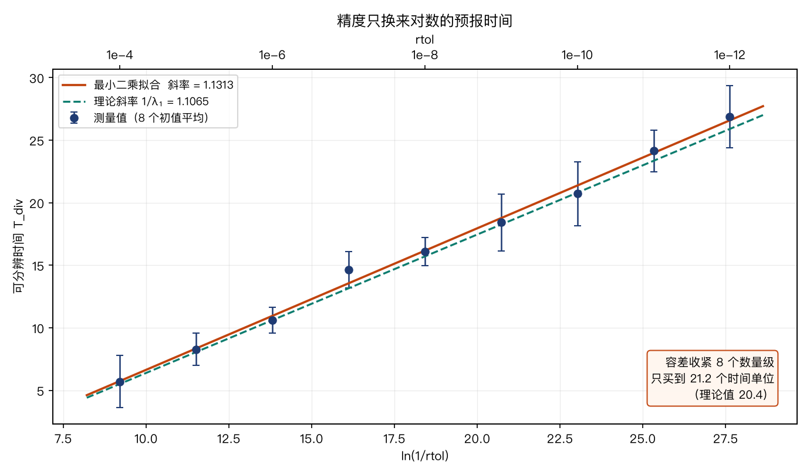
| rtol | Tdiv |
|---|---|
| 1e−4 | 5.69 |
| 1e−6 | 10.62 |
| 1e−8 | 16.11 |
| 1e−10 | 20.71 |
| 1e−12 | 26.88 |
② 精度只换来对数时间
t > 41 时，
算出的已不是那个初值的轨道。
从 rtol = 1e−4 收紧到 1e−12，DOP853 的步数约多 10 倍，预报时间从 5.7 涨到 26.9。再要 20 个时间单位需要再收紧 8 个数量级，而双精度已经到头了。
第 ③ 部分
③ 统计量不随 rtol 变
直觉：局部误差很小的数值轨道，虽然不是你要的那条真解，可能紧跟着另一条初值稍有不同的真解。
那么画出来的蝴蝶是真的蝴蝶，只是不是"你那只"。
对一致双曲系统，这是定理（影随引理）。
影随只提示方向。真正的辩护必须可测量。
③ 统计量不随 rtol 变 · 中心实验
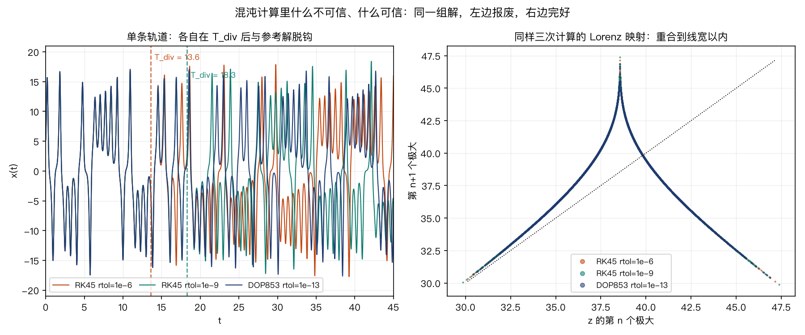
③ 统计量不随 rtol 变
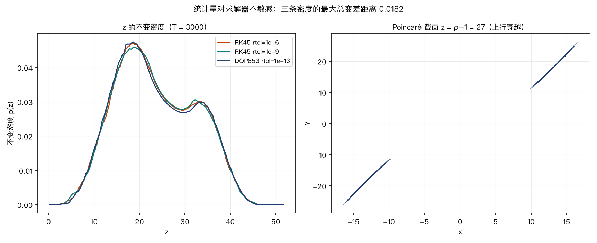
两条结论都写成了测试：
test_statistics.py::
test_lorenz_map_is_tolerance_independent
test_invariant_density_is_tolerance_independent
③ 统计量不随 rtol 变
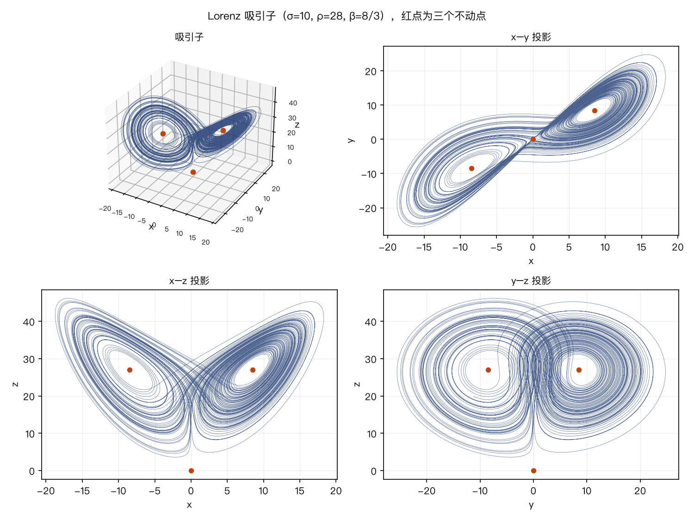
红点是三个不动点：原点是鞍点，C± 各自是一叶的中心。
两叶间的切换是非周期的，而切换序列正是 Lorenz 映射编码的东西。
可信的是这个形状和它的统计，不是其中任何一条轨道。
第 ④ 部分
④ 判据随系统类型变
| 系统类型 | 可保的结构 | 验证手段 | 长时间单条轨道 |
|---|---|---|---|
| 保守（哈密顿） | 辛形式、不变量 | 监视能量有界；辛 / 分裂格式 | 可信（误差多项式增长，辛格式下线性） |
| 耗散、非混沌 | 收敛到吸引子 | 是否收敛到正确的稳态或极限环 | 可信 |
| 混沌 | 无 | 统计量对方法不敏感 | 不可信（超过 1/λ₁ 量级） |
混沌问题的验证协议：容差扫几个数量级、方法换几种，检查 λ₁、不变密度、Lorenz 映射是否稳定。第 ③ 部分就是在执行这套协议。
④ 判据随系统类型变
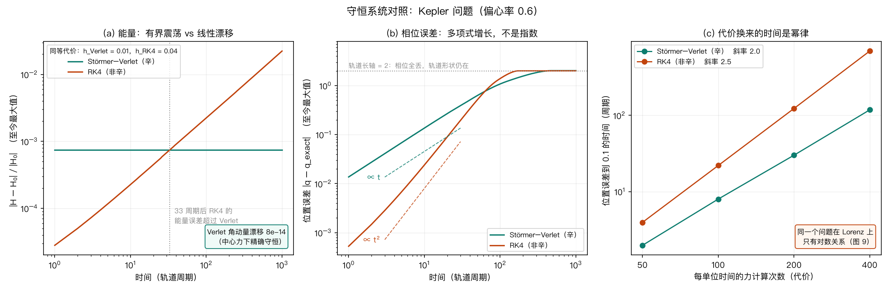
④ 判据随系统类型变
表的第一行
无耗散波动方程是哈密顿系统。Yee 的 FDTD 格式里 E 与 H 在时间上交错半格，那就是蛙跳格式，也就是辛积分器。
FDTD 能长时间运行而不出现数值能量爆炸或人工衰减，原因在结构。
表的第三行
非线性声学、声致湍流一旦进入混沌，单次实现的波形不该当作可复现的预报。
该报告的是谱、相关函数、统计矩。
结论
全部数字与图都可复现，关键断言写成了测试：
uv sync --all-groups uv run pytest uv run lorenz63 info uv run lorenz63 figure all
备用
备用 · 绪论 · 时间推进
| RK4 | RK45 | DOP853 | |
|---|---|---|---|
| 阶数 p | 4 | 5 | 8 |
| 步长 | 固定，人给 | 自适应 | 自适应 |
| 误差估计 | 无 | 5 阶 − 4 阶 | 5 阶与 3 阶组合 |
| 每步 f 次数 | 4 | 6 | 12 |
RK45 即 scipy 的 Dormand–Prince 5(4)；DOP853 是 Hairer–Wanner 的 8(5,3)。演示里的 DOP853 由 scipy 逐行移植。
步数 \(\propto \text{rtol}^{-1/p}\)。rtol 收紧 106 倍：
积分器决定代价；每 10 倍 rtol 换 2.55 个时间单位，由 λ₁ 决定。
备用 · ① 没有不变量可查
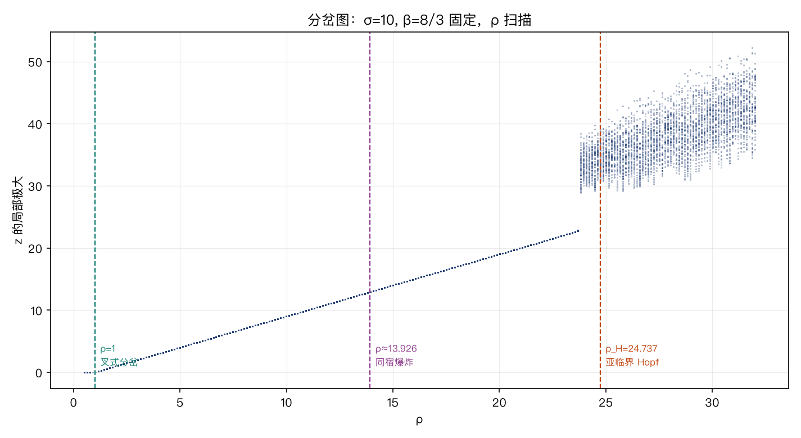
备用 · ① 没有不变量可查
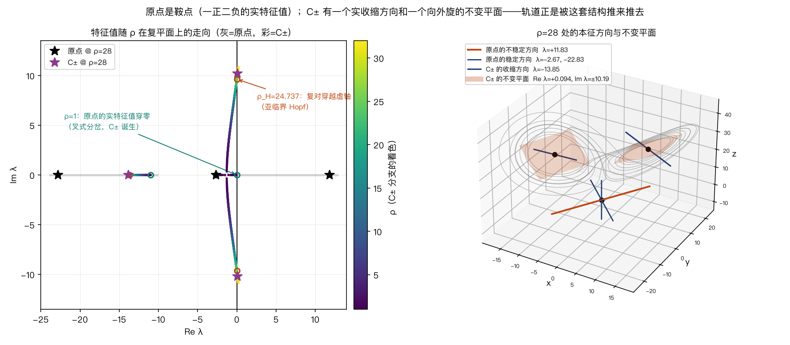
原点 +11.827723 −2.666667 −22.827723 一正二负 → 鞍点 C± −13.854578 +0.093956 ± 10.194505 i 收缩方向 + 向外旋的不变平面
备用 · ① 没有不变量可查
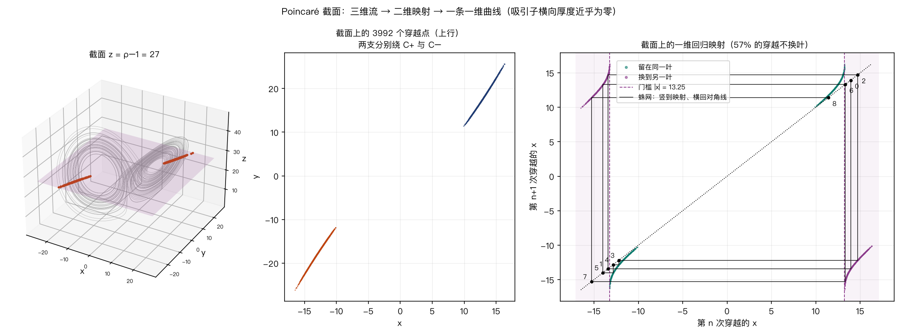
一个点是一步。越过门槛越少，落到对面越远，于是能连换好几次。
备用 · ② 精度只换来对数时间
| 是什么的性质 | 由什么决定 | 步长能改变吗 | |
|---|---|---|---|
| 数值稳定性 | 方法 + 步长 | hλJ 是否落在稳定域内 | 能 |
| Lyapunov 指数 | 流本身 | 方程 | 不能 |
真解自己就在指数分离。步长变小只减少注入的误差量，这些误差随后照样按 eλt 放大。
备用 · ② 精度只换来对数时间
线性化 \(\dot{\delta u} = J\,\delta u\)，对角化后每个方向都是 \(\dot y = \lambda y\)。
\(R_\text{RK4}(z) = 1 + z + \tfrac{z^2}{2} + \tfrac{z^3}{6} + \tfrac{z^4}{24}\)，是 \(e^z\) 的截断。
h·Re λ：一步里幅度的对数变化。h·Im λ：一步转过的弧度（C±：0.10，62 步一圈）。
最快的衰减模 λ = −21.85，时间尺度 0.046：
| h | hλ | 真解 \(e^{h\lambda}\) | RK4 \(R(h\lambda)\) |
|---|---|---|---|
| 0.01 | −0.22 | 0.8037 | 0.8037 |
| 0.05 | −1.09 | 0.335 | 0.346 |
| 0.12 | −2.62 | 0.073 | 0.78 |
| 0.15 | −3.28 | 0.038 | 2.03 |
备用 · ② 精度只换来对数时间
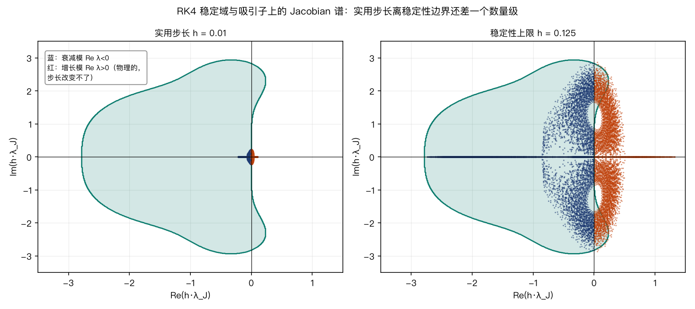
吸引子上采样的 Jacobian 谱：max |λJ| = 23.0，36.3% 的特征值实部为正。
备用 · ② 精度只换来对数时间
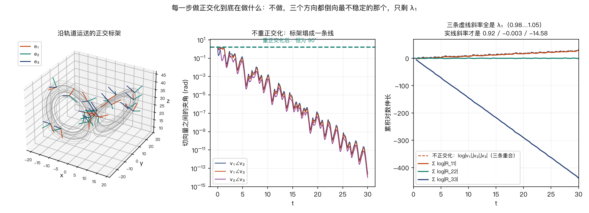
备用 · ② 精度只换来对数时间
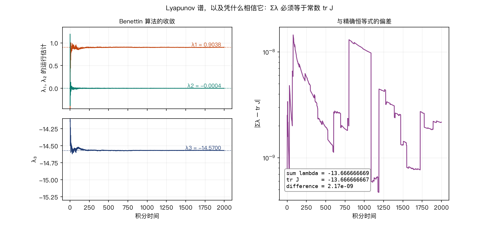
λ = (+0.903764, −0.000411, −14.570019)
对任何流 \(\sum_i \lambda_i = \langle \operatorname{tr} J\rangle\)，而 Lorenz 的 tr J 是常数。不需要拟合：
DKY = 2 + λ₁/|λ₃| = 2.062：体积为零，却比曲面厚。
备用 · ② 精度只换来对数时间
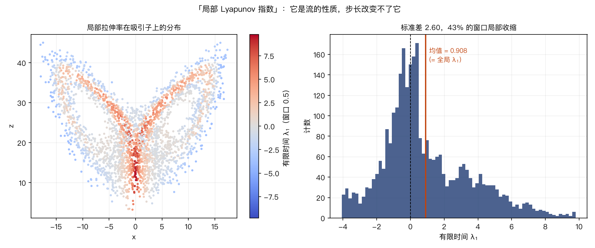
窗口长 0.5 的有限时间 λ₁：
在红色区域减小步长确实有用，理由是少注入误差，λ 本身改变不了。
备用 · ④ 判据随系统类型变
常见做法：画"误差 vs 步长"，期待一条 O(hp) 直线。
超过可预报时间后误差饱和到吸引子直径，图会变成一条水平线，看起来像格式失去了精度阶。
test_integrate.py::
test_tighter_tolerance_is_more_accurate_before_saturation
备用
| tr J | −13.6666666667 | 闭式 |
| C± | (±8.4853, ±8.4853, 27) | 闭式 |
| ρ_Hopf | 24.7368421053 | 闭式 |
| λ₁ / λ₂ / λ₃ | 0.9038 / −0.0004 / −14.5700 | T=2000 |
| Σλ − tr J | 2.17e−9 | 自洽检验 |
| D_KY | 2.062001 | λ 谱 |
| 倍增时间 | 0.767 | ln2/λ₁ |
| 双精度预报极限 | 40.76 | ln(10¹⁶)/λ₁ |
| λ₁（系综） | 0.8750 | 16 点 × 4 方向 |
| λ₁（容差斜率） | 0.8839 | T_div 拟合 |
| RK4 稳定步长上限 | 0.1253 | 仅衰减模 |
| Lorenz 映射厚度 | 8.6e−5 | z 值域比例 |
| 不变密度最大总变差 | 0.0099 | 三个 rtol |
| 有限时间 λ₁ 标准差 | 2.60 | 窗口 0.5 |